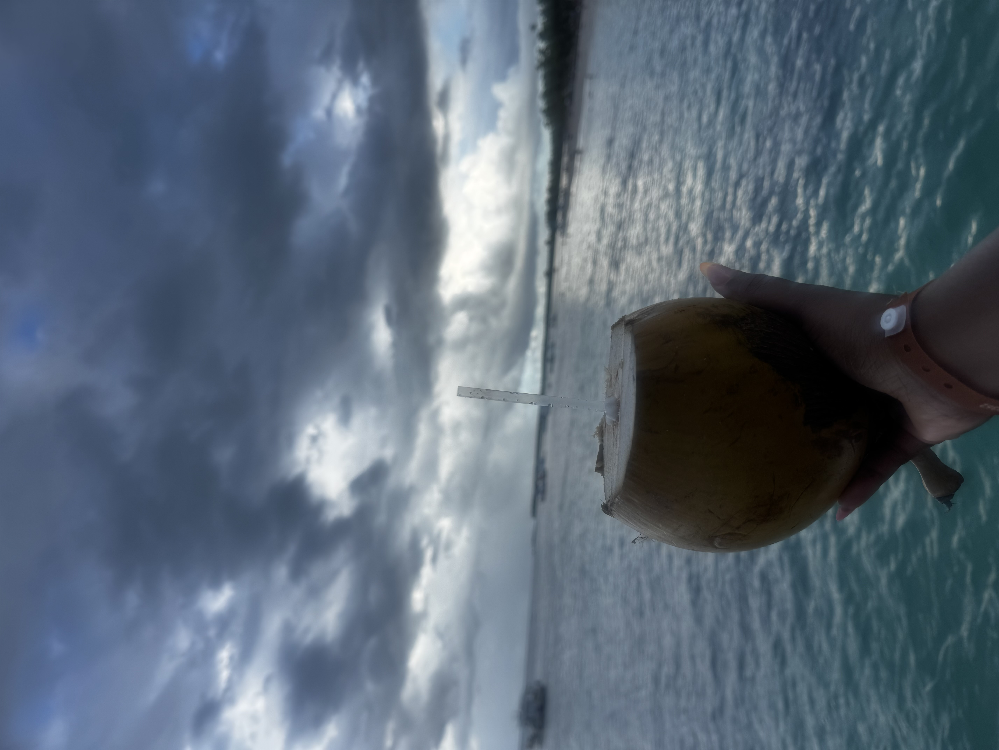
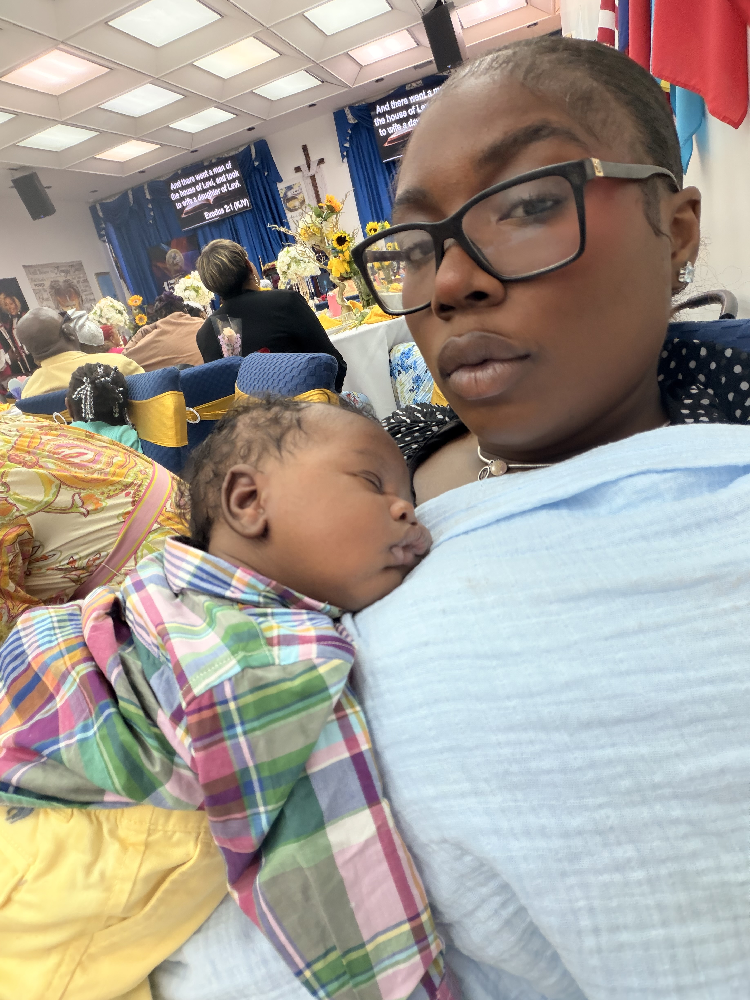
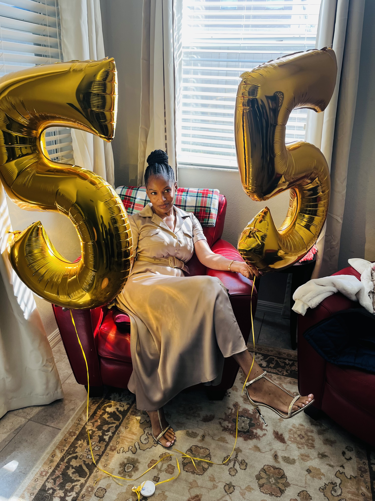
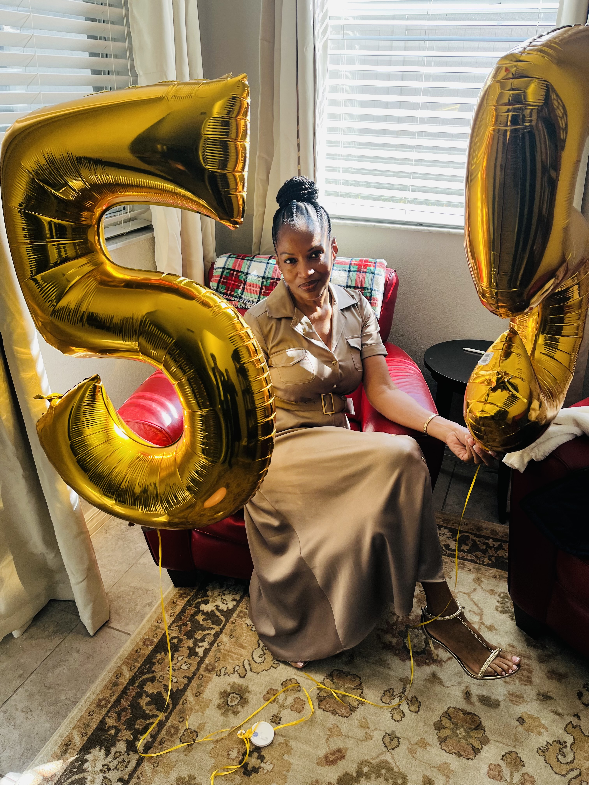

Hyacinth
I'm grateful that my surgery went well and that I can walk much better. Thanking God for healing me in Jesus' precious name.
A little family news, a few memories from the year, and some games to enjoy together. Take a look around, find your people, and have some fun.
A few words of gratitude from the family
I'm grateful that my surgery went well and that I can walk much better. Thanking God for healing me in Jesus' precious name.
I am very grateful for life. I'm grateful for family, relatives and friends. Especially my daughter.
I'm grateful for a second healthy son.
This year I'm particularly grateful for God's grace and mercy for allowing me to see another Thanksgiving. You know, a lot of kids my age is dying and I'm just grateful that God sees it fit to keep me alive.
Grateful that my dad is alive after being hospitalized for a long time.
I am grateful for GRACE and FAVOR.
A healthy life.
I'm grateful to be able to see God working in my life.
Uuh life. Not going to lie, I'm grateful that I'm around if I'm being honest. I just appreciate God for all the blessings that I have.
Grateful for life & health.
I'm grateful for my village because they are my backbone, especially when I needed them the most.
I'm grateful for the support that my sister and mom has been giving me all these years. They mean so much to me.
Giving credit, love, and recognition where it's due
I want to give a special shoutout to my village once again because throughout the whole year they called to check up on me, let me confide to them, and overall stepping up when I needed them the most.
Special recognition to my best friend Trey, always having my back.
Shoutout to everyone that made it to the baby shower.
I wanna give a special recognition shout out to Elijah. I'm super proud of all the things they've accomplished this year. The little things that may seem small to him. I just wanna shout him out. He's doing amazing.
Shout out to Champhi for being my rock during a difficult time.
Shoutout to A'eisha.
Shoutout to my sister Champhi for being there for me during tough times.
Shoutout to God fr.
Myself, for continuing to push forward even when I felt like giving up.
Huge shoutout to God! This year I've attended a couple of my close friends' funerals and it really hit home because we're young and just dropping like flies. So I'm just thankful that He saw fit to allow me to still be here in my right mind.
The little wins, the big milestones, and everything in between
My experience from this year made me reevaluate myself and my circle. I learned even the closest person to you can make an impact in life.
Doing my bachelor's degree has been very trying but I'm being held by God and I am very thankful.
I've been learning so many new skateboarding tricks in a small amount of time.
When I won my bank account in court in October.
I have been moving forward in my life in a few different ways and I'm taking it one day at a time.
My biggest accomplishment this year was graduating top 15% of my class and going into college as a sophomore.
I did a stay-cation for my bday for the first time to relax and enjoy peace and quiet and I enjoyed that. Simple but needed.
I'm proud of myself for successfully smoking a whole chicken on the first try.
My favorite moment this year was truly my birthday trip. I felt the most relaxed that I've been in a really long time. I really just allowed myself to be one with God's creation.
I think my main accomplishment is getting all As on my report card.
I loved playing with my cousins. That's what I love the most.
A few moments worth keeping









A little one has joined the family

Born: October 2026
Take a break from the reading and see what you know
Fourteen clues inspired by family sayings, places, food, and memories. Answers are written without spaces or punctuation.
Answer key: SKANK · SLACKNESS · JAMAICA · THREE · JANUARY · SWEETPOTATO · FISH · SETTASHOUSE · GOAT · SPRINGFIELD · DUHANEYPEN · SORREL · CERASEE · MARCH
Find the names and places hidden in the letter grid. Tap a starting letter, then tap an ending letter in the same row, column, or diagonal. Words can run in either direction.
Found 0 of 46 words.
This edition is a reminder that there are stories, milestones, memories, and everyday moments worth sharing. Thank you to everyone who contributed a thought, a photo, a shoutout, or a little piece of their year.
And for this year's reflection on gratitude, take a moment to read the full essay.